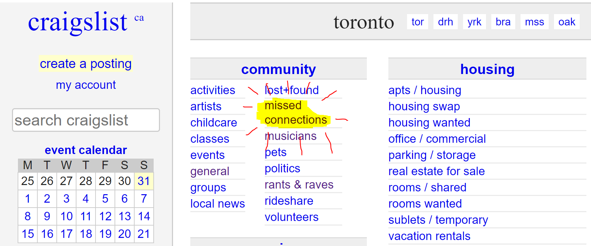

Python Practice: Craigslist Markov Chains
2019-03-31

I’ve been looking to learn a bit more Python. In a mix of inspiration from an old hackathon project and the Congratulations Podcast - lets generate some fake craigslist posts with Python.
A Markov Chain, simply, is a model of probabilities for transitioning between states. It doesn’t generate any ‘new’ insights, it just strictly bases its conclusions on the data provided to it. We’re going to use one to make a crude natural language model, with the inputs being a feed of Craigslist posts that we’ll scrape with Python. Spoiler: this makes it funny.
How can we use it for language? Well - language isn’t random. When we say a word, grammar and language often dictate for another word to follow. As an example, given a Mad-lib of “My name … “, the next word after name - most of the time - is, well, is. With enough sentences fed into a Markov Chain, it can quickly ‘learn’ general sentence structure, such as:
“I like …”, “I am …”, “I was … then …”, and so on.
As for the gaps - that’s where the material fed to the Markov chain starts filling in like a Mad-Lib. With Craigslist posts, that makes it… interesting.
To make the ‘flow’ of generated seem natural, we’re going to make models for each sentence. These posts tend to be 4-5 sentences in length, starting with an introduction and gradually moving through their, uh, story. Funny enough, it actually works. Below, we get into the code.
The results were, uhhh, interesting. Simply, I have a Github Repo for the code, and shall leave execution as an exercise left to the reader.
Here’s the libraries we’re going to use:
Here’s the code, with comments:
import requests
from bs4 import BeautifulSoup
import markovify
import re
from nltk import tokenize
# Script parameters
cityname = 'toronto' # must match the craigslist format of 'cityname.craigslist.org'
numSentences = 4 # number of sentences for the markov model to print!
# Figure out how many pages there are
r = requests.get('https://'+cityname+'.craigslist.org/search/mis')
content = BeautifulSoup(r.content,'html.parser')
TotalCount = int(content.find(class_='totalcount').string)
numPages = TotalCount//120+1;
# Initialize Markov chain models using Markovify. Using silly dummy sentences to start.
titleModel = markovify.Text("Looking for a guy named John Doe")
locationModel = markovify.Text("Main st.")
textModel = markovify.Text("Met John the other day, have you seen him?")
sentenceModels = []
# For all the pages of missed connections
for page in range(numPages):
# Get the post list page, parse it with Beautifulsoup
url = 'https://'+cityname+'.craigslist.org/search/mis?s=' + str(120*page)
r = requests.get(url)
content = BeautifulSoup(r.content,'html.parser')
# For each post link in the list
for postNum, post in enumerate(content.find_all('a',class_='result-title')):
# Get the actual post
url = post.get('href')
r = requests.get(url)
postContent = BeautifulSoup(r.content,'html.parser')
postMeta = postContent.find(class_='postingtitletext')
# If the post exists (Sometimes the link leads to a post that has been removed)
if postMeta:
postTitle = postMeta.find(id ='titletextonly').string
postLocation = postMeta.small
postText = postContent.find(id='postingbody')
postText = postText.div.next_sibling.string
postText = re.sub('[|]|:|-|;|"|(\(|\))|[\.][\.][\.]|[\']','',postText)
postText = tokenize.sent_tokenize(postText)
postTitle = re.sub('[|]|:|-|;|"|(\(|\))|[\.][\.][\.]|[\']','',postTitle)
title = markovify.Text(postTitle)
titleModel = markovify.combine(models=[titleModel, title])
if len(postText) > len(sentenceModels):
while len(postText) > len(sentenceModels):
sentenceModels.append(markovify.Text('I'))
for i, sentence in enumerate(postText):
text = markovify.Text(sentence)
sentenceModels[i] = markovify.combine(models=[sentenceModels[i], text])
print('Processed Post ' + str(postNum+1+120*page) +'/'+ str(TotalCount-1)+' - ' + postTitle)
# Generate Sentences from the Model
print('\nMARKOV GENERATED\n')
print(titleModel.make_sentence(tries = 100))
print('\n')
for i in range(numSentences):
s = sentenceModels[i].make_sentence(tries = 100)
if(s != 'None'):
print(s)